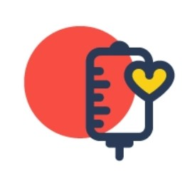

Safe blood saves lives and improves health
- women with complications of pregnancy, such as ectopic pregnancies and haemorrhage before, during or after childbirth;
- children with severe anaemia often resulting from malaria or malnutrition;
- people with severe trauma following man-made and natural disasters; and
- many complex medical and surgical procedures and cancer patients